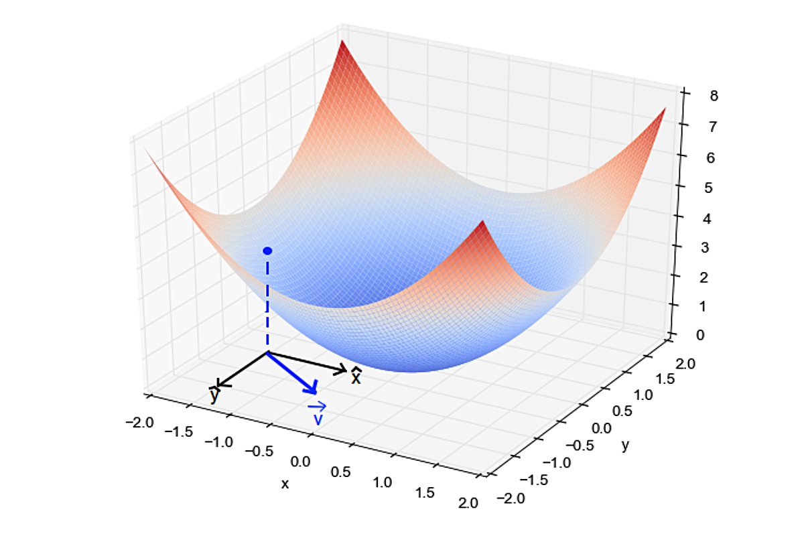

Implemented Gradient Descent with Automatic Differentiation to minimize a complex polynomial function. Enhanced the vanilla gradient descent algorithm by integrating momentum and adaptive learning rates. Analyzed the convergence and performance of these techniques by comparing the number of update steps required for each method.
Utilizing Python, an Immigration Dataset that contains data regarding migration patterns to and from Canada spanning the years 1980 to 2013 is visualized. Libraries such as NumPy, Matplotlib, Seaborn, and PyWaffle is utilized to create charts and graphs such as bar plots, line plots, waffle charts, bubble plots, and more.
Developed a Machine Learning model that predicts the engagement level of educational videos for learners. Features extracted from transcripts, audio tracks, and hosting sites are utilized to determine engagement. Employed a Random Forest Classifier, yielding an AUC score of 0.85 and an accuracy score of 92%.
Employed SQL to clean a housing dataset. Implemented various data cleaning and transformation techniques to standardize date formats, address missing locations, and further elevate data quality by utilizing Common Table Expressions (CTEs) and case statements.
Used Python and employed BeautifulSoup, requests, and pandas to scrape data from Walmart's webpage, extracting, cleaning and feeding it into Excel. Implemented a function to automate the data append process into Excel every 24 hours.
Visualized a Crop Production dataset using Tableau, which consists of crop production data from India between the years 1997 and 2015. Utilized different types of visualizations, such as maps and graphs, and employed filter functions to create dynamic dashboards.
Used Python to identify correlations in a car sales dataset. Explored and cleaned the data by addressing number formats and other features. Employed pandas, matplotlib, numpy, and seaborn to create insightful visualizations.
Utilized Microsoft Power BI to visualize a data professional survey. Employed power query for dataset cleaning and transformation. Created visualizations for looking into average salary by job title, satisfaction with work/life balance and so on.